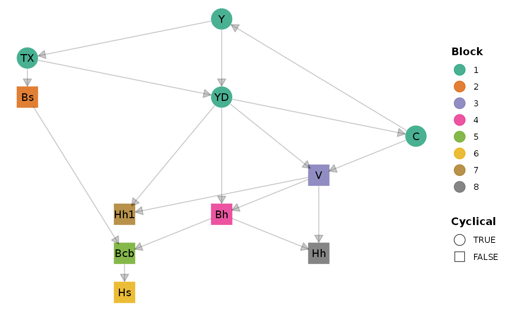
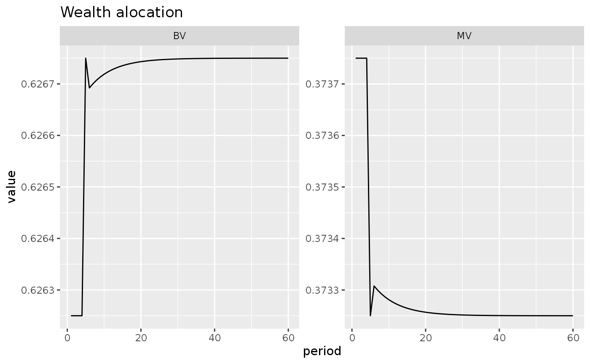
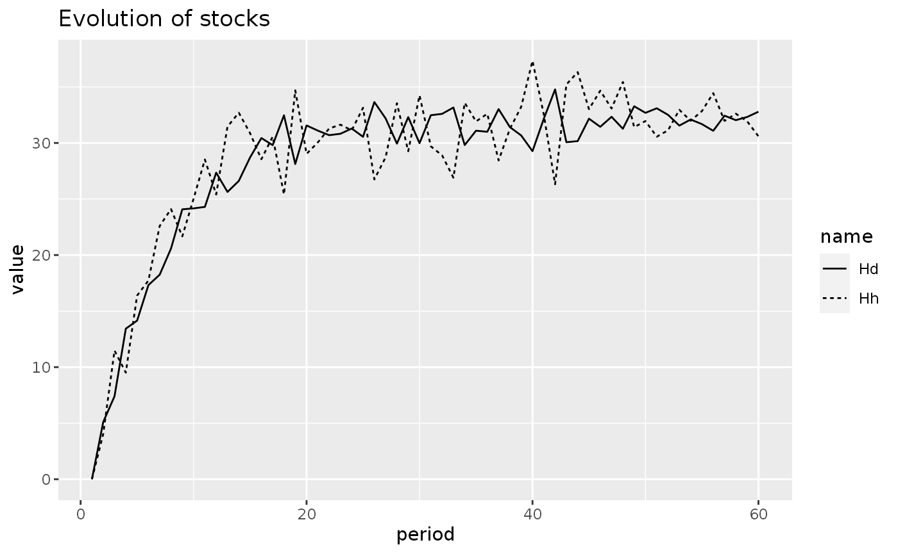
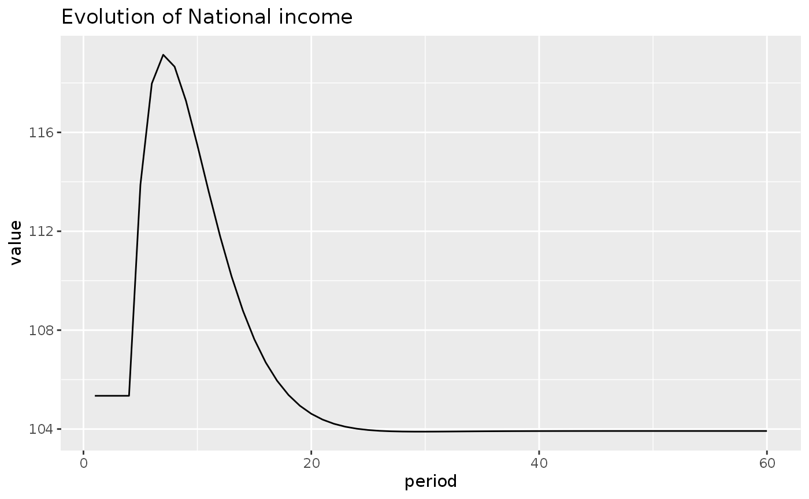
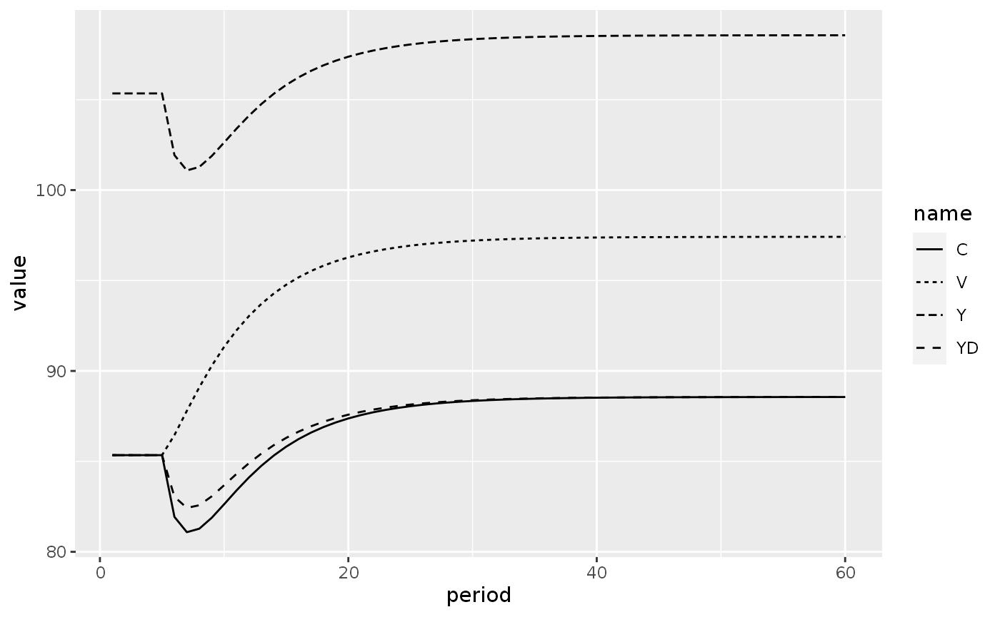
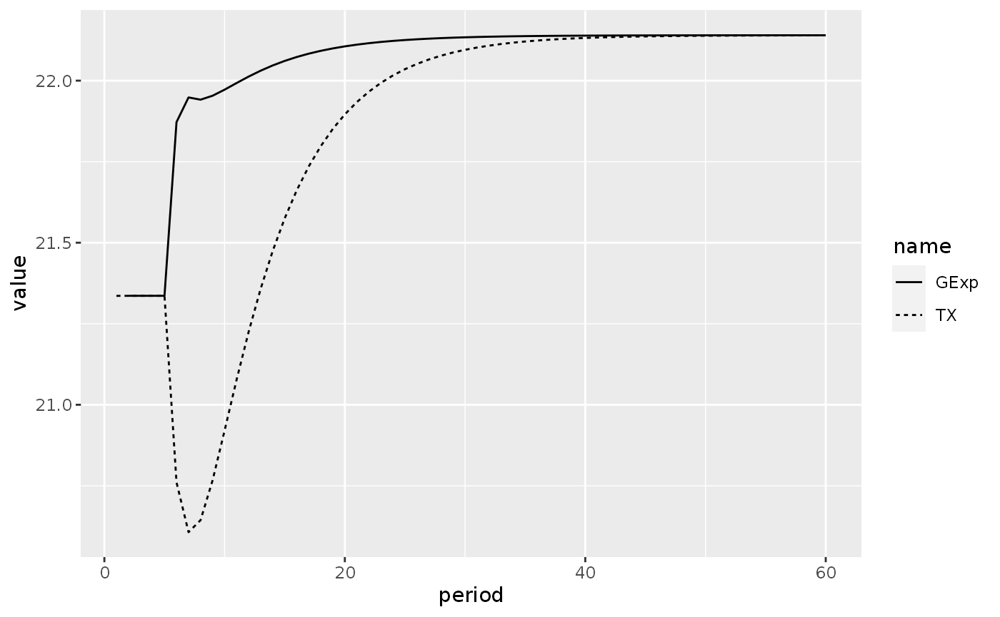
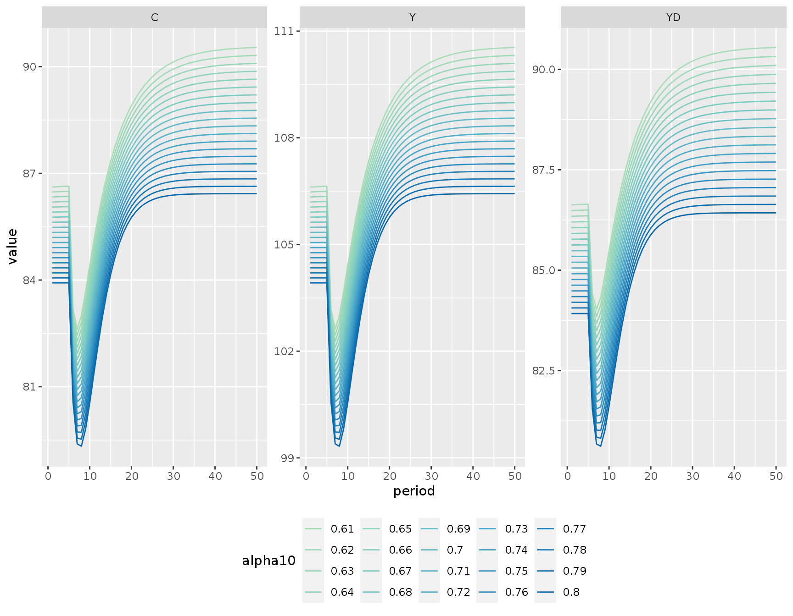

library(tidyverse)
#> ── Attaching packages ─────────────────────────────────────── tidyverse 1.3.1 ──
#> ✔ ggplot2 3.3.5 ✔ purrr 0.3.4
#> ✔ tibble 3.1.5 ✔ dplyr 1.0.7
#> ✔ tidyr 1.1.4 ✔ stringr 1.4.0
#> ✔ readr 2.0.2 ✔ forcats 0.5.1
#> ── Conflicts ────────────────────────────────────────── tidyverse_conflicts() ──
#> ✖ dplyr::filter() masks stats::filter()
#> ✖ dplyr::lag() masks stats::lag()
library(sfcr)The matrices of model PC
We start the analysis by writing down the balance-sheet and transactions-flow matrices of the model:
bs_pc <- sfcr_matrix(
columns = c("Households", "Firms", "Government", "Central bank", "sum"),
codes = c("h", "f", "g", "cb", "s"),
r1 = c("Money", h = "+Hh", cb = "-Hs"),
r2 = c("Bills", h = "+Bh", g = "-Bs", cb = "+Bcb"),
r3 = c("Balance", h = "-V", g = "+V")
)
sfcr_matrix_display(bs_pc, "bs")| Households | Firms | Government | Central bank | \(\sum\) | |
|---|---|---|---|---|---|
| Money | \(+Hh\) | \(-Hs\) | \(0\) | ||
| Bills | \(+Bh\) | \(-Bs\) | \(+Bcb\) | \(0\) | |
| Balance | \(-V\) | \(+V\) | \(0\) | ||
| \(\sum\) | \(0\) | \(0\) | \(0\) | \(0\) | \(0\) |
tfm_pc <- sfcr_matrix(
columns = c("Households", "Firms", "Government", "CB current", "CB capital"),
codes = c("h", "f", "g", "cbc", "cbk"),
c("Consumption", h = "-C", f = "+C"),
c("Govt. Expenditures", f = "+G", g = "-G"),
c("Income", h = "+Y", f = "-Y"),
c("Int. payments", h = "+r[-1] * Bh[-1]", g = "-r[-1] * Bs[-1]", cbc = "+r[-1] * Bcb[-1]"),
c("CB profits", g = "+r[-1] * Bcb[-1]", cbc = "-r[-1] * Bcb[-1]"),
c("Taxes", h = "-TX", g = "+TX"),
c("Ch. Money", h = "-(Hh - Hh[-1])", cbk = "+(Hs - Hs[-1])"),
c("Ch. Bills", h = "-(Bh - Bh[-1])", g = "+(Bs - Bs[-1])", cbk = "-(Bcb - Bcb[-1])")
)
sfcr_matrix_display(tfm_pc)| Households | Firms | Government | CB current | CB capital | \(\sum\) | |
|---|---|---|---|---|---|---|
| Consumption | \(-C\) | \(+C\) | \(0\) | |||
| Govt. Expenditures | \(+G\) | \(-G\) | \(0\) | |||
| Income | \(+Y\) | \(-Y\) | \(0\) | |||
| Int. payments | \(+r_{-1}\cdot Bh_{-1}\) | \(-r_{-1}\cdot Bs_{-1}\) | \(+r_{-1}\cdot Bcb_{-1}\) | \(0\) | ||
| CB profits | \(+r_{-1}\cdot Bcb_{-1}\) | \(-r_{-1}\cdot Bcb_{-1}\) | \(0\) | |||
| Taxes | \(-TX\) | \(+TX\) | \(0\) | |||
| Ch. Money | \(-\Delta Hh\) | \(+\Delta Hs\) | \(0\) | |||
| Ch. Bills | \(-\Delta Bh\) | \(+\Delta Bs\) | \(-\Delta Bcb\) | \(0\) | ||
| \(\sum\) | \(0\) | \(0\) | \(0\) | \(0\) | \(0\) | \(0\) |
The model
To simulate the model, we first write down the equations and the external values:
pc_eqs <- sfcr_set(
Y ~ C + G,
YD ~ Y - TX + r[-1] * Bh[-1],
TX ~ theta * (Y + r[-1] * Bh[-1]),
V ~ V[-1] + (YD - C),
C ~ alpha1 * YD + alpha2 * V[-1],
Hh ~ V - Bh,
Hh1 ~ V * ((1 - lambda0) - lambda1 * r + lambda2 * ( YD/V )), # EQ 4.6A
Bh ~ V * (lambda0 + lambda1 * r - lambda2 * ( YD/V )),
Bs ~ Bs[-1] + (G + r[-1] * Bs[-1]) - (TX + r[-1] * Bcb[-1]),
Hs ~ Hs[-1] + Bcb - Bcb[-1],
Bcb ~ Bs - Bh
)
pc_ext <- sfcr_set(
# Exogenous
r ~ 0.025,
G ~ 20,
# Parameters
alpha1 ~ 0.6,
alpha2 ~ 0.4,
theta ~ 0.2,
lambda0 ~ 0.635,
lambda1 ~ 0.05,
lambda2 ~ 0.01
)We then simulate the model to get the steady state values:
pc <- sfcr_baseline(
equations = pc_eqs,
external = pc_ext,
periods = 70,
hidden = c("Hh" = "Hs")
)The fact that the hidden equation is fulfilled already indicates that the accounting part of the model is water tight. However, the sfcr package also allow the user to validate the model using the balance-sheet and transactions-flow matrices.
sfcr_validate(bs_pc, pc, "bs")
#> Water tight! The balance-sheet matrix is consistent with the simulated model.
sfcr_validate(tfm_pc, pc, "tfm")
#> Water tight! The transactions-flow matrix is consistent with the simulated model.Given the portfolio choice equations, the model is well specified if equation 4.6A is equal to 4.6. We can use the base all.equal() function to check it:
all.equal(pc$Hh, pc$Hh1)
#> [1] TRUEWe can safely conclude that the baseline model is well specified. The sfcr package also allows the user to plot the DAG representation of the model and a Sankey’s diagram of the transactions-flow matrix. Let’s check it out:
DAG
Let’s use the sfcr_dag_cycles_plot() function to see the structure of the model:
sfcr_dag_cycles_plot(pc_eqs)
As can be seen, there’s a cycle in this model. The sfcr package relies on the igraph package to identify the best ordering of the equations, reducing the the its computational burden. The blocks of independent equations and the iterations needed at each block to simulate the model can be retrieved by calling the sfcr_get_matrix() and sfcr_get_blocks() equations.
Alternatively, it is also possible to use the sfcr_dag_blocks_plot() function to visualize this structure:
sfcr_dag_blocks_plot(pc_eqs)
Sankey’s diagram
Another functionality offered by the sfcr package is that it can generate a Sankey’s diagram representation of the transactions-flow matrix.
Here, it is crucial to have the matrix validated in order to assure that the diagram is correctly specified. Luckily, we already saw that it was the case earlier in this notebook:
sfcr_sankey(tfm_pc, pc)We can now move to simulation of different scenarios.
Scenario 1: Increase in the rate of interest on bills
Let’s start by increasing the rate of interest on bills by 100 points:
shock1 <- sfcr_shock(
variables = sfcr_set(
r ~ 0.035
),
start = 5,
end = 60
)
pc2 <- sfcr_scenario(pc, scenario = shock1, periods = 60)What happen in this scenario with the share of bills/money in household portfolios?
Since these ratios are not calculated when we simulate the scenario, we must calculate them now. We use the dplyr package from the tidyverse to manipulate the model:
pc2 <- pc2 %>%
mutate(BV = Bh / V,
MV = Hh / V)
# If the read prefers to stick with base R functions, uncomment the following lines:
# pc2$BV <- pc2$B_h / pc2$V
# pc2$MV <- pc2$H_h / pc2$VWe reshape the model into the long format, and then we plot.
pc2_long <- pc2 %>%
pivot_longer(cols = -period)
pc2_long %>%
filter(name %in% c("BV", "MV")) %>%
ggplot(aes(x = period, y = value)) +
geom_line() +
facet_wrap(~ name, scales = 'free_y') +
labs(title = "Wealth alocation")
pc2_long %>%
filter(name %in% c("YD", "C")) %>%
ggplot(aes(x = period, y = value)) +
geom_line(aes(linetype = name)) +
labs(title = "Evolution of disposable income and household consumption",
subtitle = "Following an increase of 100 points in the rate of interest")
PCEX1: Random shocks to expected disposable income
To add a random shock to a variable with the sfcr package, one must create an auxiliary exogenous variable that will hold the exogenous shock, and add this exogenous variable to the endogenous variable of interest.
Let’s see how to add a shock to expected disposable income, following equation 4.16 of Godley and Lavoie (2007).
First, we add the random shock, that we will call Ra, to the list of exogenous variables from the model pc.
To add a normal random shock in R, the common way is to use the rnorm() function from the built-in stats package. This function accepts three arguments:
- Number of observations;
- Mean (default is 0);
- Standard deviation (default is 1).
The recommended way to use this function in the sfcr package is through the sfcr_random() function, a wrapper that automatically detect the correct number of periods supplied to sfcr_baseline() or sfcr_scenario(). The sfcr_random() function accepts as its first argument three string codes ("rnorm", "rbinom", and "runif") that correspond to three random generator function from the stats built-in package. It also passes any extra argument to these functions.
pc_ext2 <- c(pc_ext, Ra ~ sfcr_random("rnorm", sd = 0.05))Next, we rewrite the equations, adding the expectations to the model:
pc_eqs2 <- pc_eqs
pc_eqs2[[5]] <- C ~ alpha1 * YDE + alpha2 * V[-1]
pc_eqs2[[8]] <- Bh ~ Bd
pc_eqs2[[12]] <- Hd ~ VE - Bd
pc_eqs2[[13]] <- VE ~ V[-1] + (YDE - C)
pc_eqs2[[14]] <- Bd ~ VE * (lambda0 + lambda1 * r - lambda2 * ( YDE/VE ))
pc_eqs2[[15]] <- YDE ~ YD * (1 + Ra)We use the same parameters as before:
pcex <- sfcr_baseline(pc_eqs2, pc_ext2, 60, hidden = c("Hh" = "Hs"))The impact of adding these random noise to the expected disposable income can be seen by visualizing the money held balances vs the demand for money, and the changes in these variables:
pcex <- pcex %>%
mutate(delta_Hh = Hh - dplyr::lag(Hh),
delta_Hd = Hd - dplyr::lag(Hd))
pcex_long <- pcex %>%
pivot_longer(cols = -period)
pcex_long %>%
filter(name %in% c("Hh", "Hd")) %>%
ggplot(aes(x = period, y = value)) +
geom_line(aes(linetype = name)) +
labs(title = "Evolution of stocks")
pcex_long %>%
filter(name %in% c("delta_Hh", "delta_Hd")) %>%
ggplot(aes(x = period, y = value)) +
geom_line(aes(linetype = name)) +
labs(title = "Variation")
#> Warning: Removed 2 row(s) containing missing values (geom_path).
PCEX2: Adaptive expectations
What would happen if, instead of random shocks to the expected disposable income, the households in our model followed a process of adaptive expectations?
pc_eqs3 <- pc_eqs2
pc_eqs3[[15]] <- YDE ~ YD[-1]
pcex2 <- sfcr_baseline(pc_eqs3, pc_ext2, 60)
#Paradox of thrift?
One aspect of the model PCEX2 is that the paradox of thrift does not hold: an increase in the propensity to consume out of disposable income reduce the national income (Y) in the long run.
We can see this by adding a permanent increase to alpha1 to model PCEX2:
shock2 <- sfcr_shock(
variables = sfcr_set(
alpha1 ~ 0.7
),
start = 5,
end = 60
)
pc3 <- sfcr_scenario(pcex2, scenario = shock2, periods = 60)
pc3_long <- pc3 %>%
#mutate(LV = dplyr::lag(V, n = 2L)) %>%
pivot_longer(cols = -period)
pc3_long %>%
filter(name == "Y") %>%
ggplot(aes(x = period, y = value)) +
geom_line() +
labs(title = "Evolution of National income")
pc3_long %>%
filter(name %in% c("C", "YDE", "V")) %>%
ggplot(aes(x = period, y = value)) +
geom_line(aes(linetype = name)) +
labs(caption = "In the book it is written 'lagged' wealth but it is wealth actually.")
The puzzling impact of interest rates reconsidered
What would happen with model PCEX2 if the propensity to consume (to save) becomes dependent on the rate of interest on bills?
pc_eqs4 <- pc_eqs3
pc_eqs4[[16]] <- alpha1 ~ alpha10 - iota * r[-1]
pc_ext3 <- pc_ext
pc_ext3[[3]] <- alpha10 ~ 0.7
pc_ext3[[9]] <- iota ~ 4
pcex3 <- sfcr_baseline(pc_eqs4, pc_ext3, 60)We add shock1 to this model:
pcex3_1 <- sfcr_scenario(pcex3, scenario = shock1, 60)
pcex3_1_long <- pcex3_1 %>%
mutate(GExp = G + (dplyr::lag(r) * dplyr::lag(Bs)) - (dplyr::lag(r) * dplyr::lag(Bcb)) ) %>%
pivot_longer(cols = -period)
pcex3_1_long %>%
filter(name %in% c("Y", "V", "YD", "C")) %>%
ggplot(aes(x = period, y = value)) +
geom_line(aes(linetype = name))
pcex3_1_long %>%
filter(name %in% c("GExp", "TX")) %>%
ggplot(aes(x = period, y = value)) +
geom_line(aes(linetype = name))
#> Warning: Removed 1 row(s) containing missing values (geom_path).
Appendix: visualizing the sensitivity to parameters’ values
This session requires a slightly more involved programming skills, and can be safely skipped by beginners.
When I was learning these models, I always wondered about the role of the parameters. For instance, in model PCEX2, one does only need a couple of trials to see that changing the parameters alpha10 and iota will change the position of the lines. Let’s explore this issue.
The sfcr package provides a set of functions that makes this type of analysis very easy.
The most important function for this type of analysis is the sfcr_multis() function. This function generates multiple models from an expanded object and a fixed object. Currently, it accepts three possible combinations:
A
expandedexternal set of parameters and exogenous values with afixedset of model equations to generate multiple baseline models.A
expandedset of shocks that are applied to afixedbaseline model, generating multiple scenarios.A
expandedset of baseline models that are are applied to afixedshock, generating multiple scenario models from multiple baseline models that receive the same shock.
In this notebook, we are going to explore the impact of different values for the alpha10 by generating many baseline models and applying the same shock to all of these models.
We start by creating a vector with 20 possible values spanning from 0.61 to 0.8 withe the built-in seq function. We use this vector to expand the external set with the sfcr_expand() function.
values = seq(0.61, 0.8, 0.01)
alpha10Exp <- sfcr_expand(x = pc_ext3, variable = alpha10, values = values)
#We then use the sfcr_multis() function to generate multiple baseline models:
pc_multi_bl <- sfcr_multis(alpha10Exp, pc_eqs4, periods = 50)Finally, apply the shock1 shock to all the models in pc_multi_bl:
shock1 <- sfcr_shock(
variables = sfcr_set(
r ~ 0.035
),
start = 5,
end = 50
)
pc_multi_scn <- sfcr_multis(pc_multi_bl, shock1, periods = 50)
# We also need to expand the color palettes
colourCount <- 20 # number of levels
getPalette <- grDevices::colorRampPalette(RColorBrewer::brewer.pal(6, "GnBu")[c(3:6)])
bind_rows(pc_multi_scn) %>%
mutate(simulation = as_factor(simulation)) %>%
pivot_longer(cols = -c(period, simulation)) %>%
filter(name %in% c("Y", "YD", "C")) %>%
ggplot(aes(x = period, y = value, color = simulation)) +
geom_line() +
theme(legend.position = "bottom") +
scale_color_manual("alpha10",
values = getPalette(20),
labels = as.character(values)) +
facet_wrap(~ name, scales = 'free_y')
We can see that the changing the alpha10 parameter affects the level of the variables but do not change its underlying dynamics.